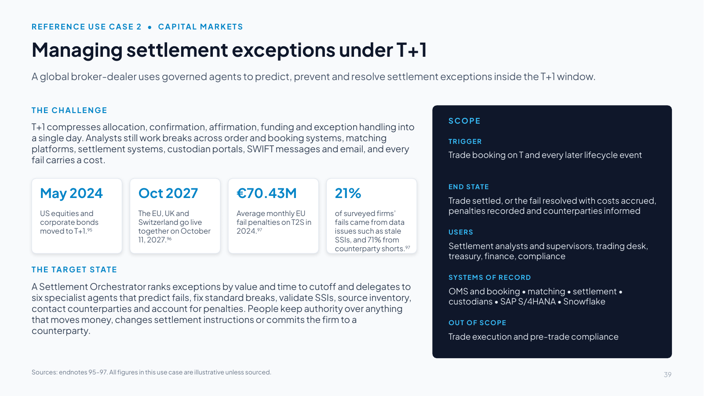
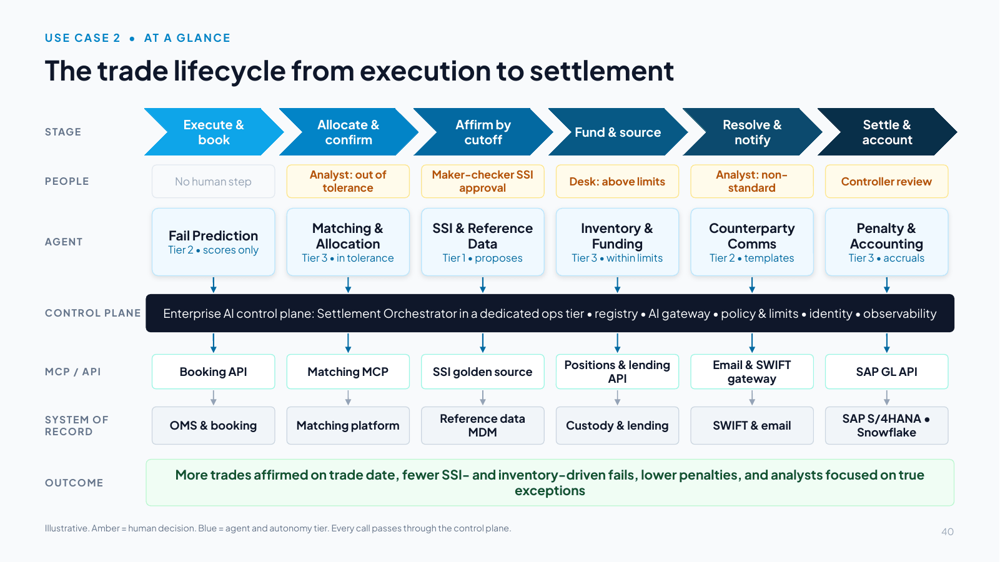
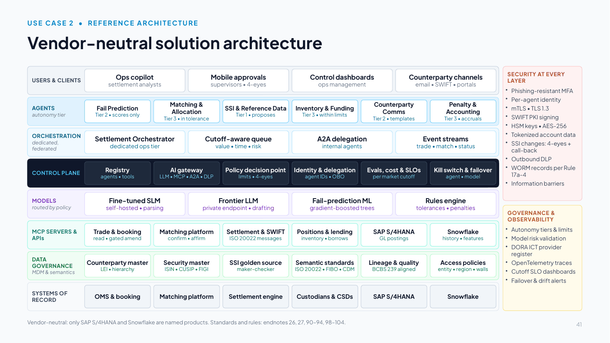
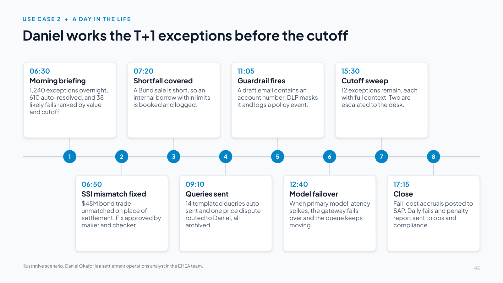
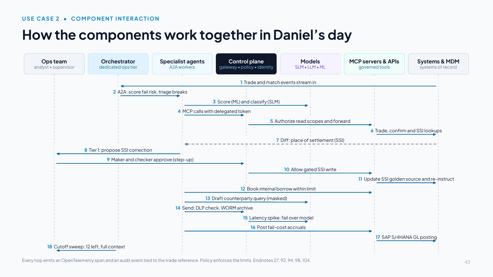
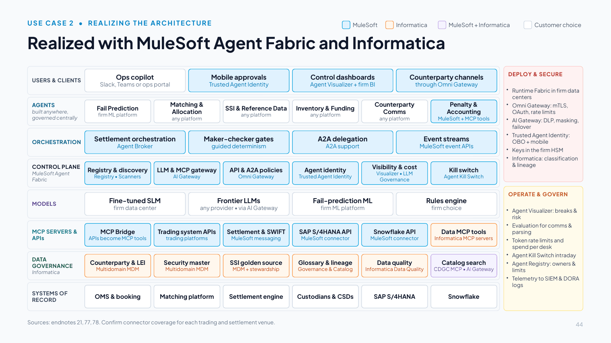
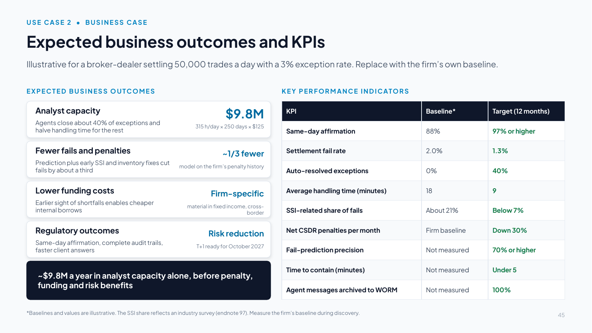
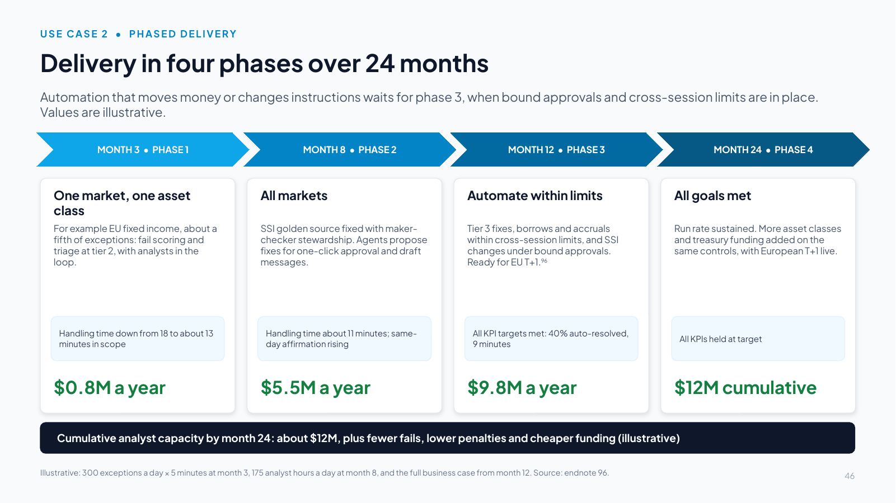
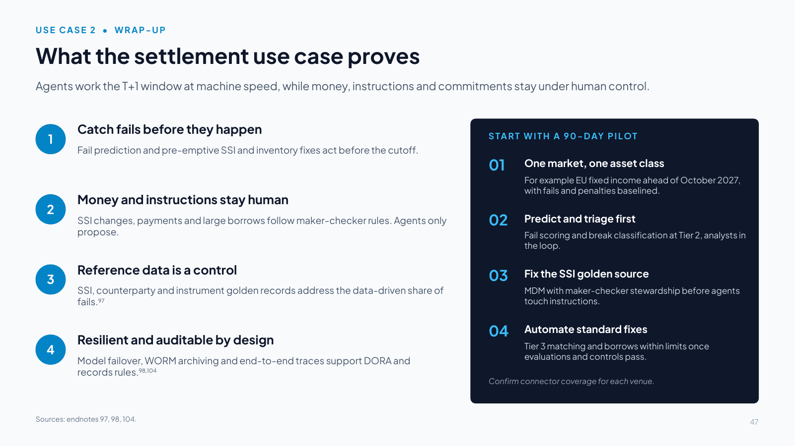

Slides 39–47
Use case 2: Capital markets T+1 settlement exceptions
Slide 39 Managing settlement exceptions under T+1

Download slide 39 as a PowerPoint file (.pptx, 63 KB, with speaker notes)
Slide text
A global broker-dealer uses governed agents to predict, prevent and resolve settlement exceptions inside the T+1 window.
THE CHALLENGE
T+1 compresses allocation, confirmation, affirmation, funding and exception handling into a single day. Analysts still work breaks across order and booking systems, matching platforms, settlement systems, custodian portals, SWIFT messages and email, and every fail carries a cost.
May 2024
US equities and corporate bonds moved to T+1.95
Oct 2027
The EU, UK and Switzerland go live together on October 11, 2027.96
€70.43M
Average monthly EU fail penalties on T2S in 2024.97
21%
of surveyed firms’ fails came from data issues such as stale SSIs, and 71% from counterparty shorts.97
THE TARGET STATE
A Settlement Orchestrator ranks exceptions by value and time to cutoff and delegates to six specialist agents that predict fails, fix standard breaks, validate SSIs, source inventory, contact counterparties and account for penalties. People keep authority over anything that moves money, changes settlement instructions or commits the firm to a counterparty.
SCOPE
TRIGGER
Trade booking on T and every later lifecycle event
END STATE
Trade settled, or the fail resolved with costs accrued, penalties recorded and counterparties informed
USERS
Settlement analysts and supervisors, trading desk, treasury, finance, compliance
SYSTEMS OF RECORD
OMS and booking • matching • settlement • custodians • SAP S/4HANA • Snowflake
OUT OF SCOPE
Trade execution and pre-trade compliance
Sources: endnotes 95–97. All figures in this use case are illustrative unless sourced.
Speaker notes
Talk track (two minutes): The second reference use case moves to capital markets post-trade operations at a global broker-dealer. As before, the architecture is vendor-neutral except for the transactional platforms named (SAP S/4HANA for the general ledger and Snowflake for trade history and analytics). Trading, matching and settlement platforms are described generically.
Why now: the US moved most broker-dealer securities trades, including equities and corporate bonds, to T+1 on May 28, 2024, together with a requirement for broker-dealers to complete allocations, confirmations and affirmations as soon as technologically practicable and no later than the end of trade date [95]. The EU, the UK and Switzerland move to T+1 together on October 11, 2027 [96]. Failures are expensive: in 2024 participants paid on average €70.43 million a month in EU cash penalties for settlement fails on T2S, and a 2025 industry survey found that 71% of respondents' 2024 fails were caused by counterparty shorts and 21% by data issues such as incorrect or stale standing settlement instructions [97].
In the target state, a Settlement Orchestrator ranks exceptions and delegates to six specialist agents: Fail Prediction, Matching & Allocation, SSI & Reference Data, Inventory & Funding, Counterparty Communications, and Penalty & Accounting. People keep authority over anything that moves money, changes settlement instructions or commits the firm to a counterparty.
The companion handbook (Section 12) has the full detail.
Slide 40 The trade lifecycle from execution to settlement

Download slide 40 as a PowerPoint file (.pptx, 64 KB, with speaker notes)
Slide text
STAGE
PEOPLE
AGENT
CONTROL PLANE
MCP / API
SYSTEM OF RECORD
OUTCOME
Execute & book
No human step
Fail Prediction
Tier 2 • scores only
Booking API
OMS & booking
Allocate & confirm
Analyst: out of tolerance
Matching & Allocation
Tier 3 • in tolerance
Matching MCP
Matching platform
Affirm by cutoff
Maker-checker SSI approval
SSI & Reference Data
Tier 1 • proposes
SSI golden source
Reference data MDM
Fund & source
Desk: above limits
Inventory & Funding
Tier 3 • within limits
Positions & lending API
Custody & lending
Resolve & notify
Analyst: non-standard
Counterparty Comms
Tier 2 • templates
Email & SWIFT gateway
SWIFT & email
Settle & account
Controller review
Penalty & Accounting
Tier 3 • accruals
SAP GL API
SAP S/4HANA • Snowflake
Enterprise AI control plane: Settlement Orchestrator in a dedicated ops tier • registry • AI gateway • policy & limits • identity • observability
More trades affirmed on trade date, fewer SSI- and inventory-driven fails, lower penalties, and analysts focused on true exceptions
Illustrative. Amber = human decision. Blue = agent and autonomy tier. Every call passes through the control plane.
Speaker notes
Walk the six post-trade stages left to right, pointing to the human decision (amber), the agent and its tier (blue), and the governed path to each system.
- Execute & book: the Fail Prediction agent scores every trade's probability of failing as it is booked (Tier 2: scores only).
- Allocate & confirm: the Matching & Allocation agent fixes breaks within tolerances (Tier 3). Anything out of tolerance goes to an analyst.
- Affirm by cutoff: the SSI & Reference Data agent validates instructions against the SSI golden source and proposes corrections. Changes need maker-checker approval (Tier 1).
- Fund & source: the Inventory & Funding agent books internal borrows or funding within limits (Tier 3). Above limits, the desk approves.
- Resolve & notify: the Counterparty Communications agent sends templated queries (Tier 2). Non-standard messages go to an analyst.
- Settle & account: the Penalty & Accounting agent posts fail-cost accruals to SAP S/4HANA (Tier 3) for controller review.
Note the orchestration choice in the band: the Settlement Orchestrator runs in a dedicated operations tier, federated under the enterprise control plane.
Slide 41 Vendor-neutral solution architecture

Download slide 41 as a PowerPoint file (.pptx, 66 KB, with speaker notes)
Slide text
USERS & CLIENTS
Ops copilot
settlement analysts
Mobile approvals
supervisors • 4-eyes
Control dashboards
ops management
Counterparty channels
email • SWIFT • portals
AGENTS
autonomy tier
Fail Prediction
Tier 2 • scores only
Matching & Allocation
Tier 3 • in tolerance
SSI & Reference Data
Tier 1 • proposes
Inventory & Funding
Tier 3 • within limits
Counterparty Comms
Tier 2 • templates
Penalty & Accounting
Tier 3 • accruals
ORCHESTRATION
dedicated, federated
Settlement Orchestrator
dedicated ops tier
Cutoff-aware queue
value • time • risk
A2A delegation
internal agents
Event streams
trade • match • status
CONTROL PLANE
Registry
agents • tools
AI gateway
LLM • MCP • A2A • DLP
Policy decision point
limits • 4-eyes
Identity & delegation
agent IDs • OBO
Evals, cost & SLOs
per market cutoff
Kill switch & failover
agent • model
MODELS
routed by policy
Fine-tuned SLM
self-hosted • parsing
Frontier LLM
private endpoint • drafting
Fail-prediction ML
gradient-boosted trees
Rules engine
tolerances • penalties
MCP SERVERS & APIs
Trade & booking
read • gated amend
Matching platform
confirm • affirm
Settlement & SWIFT
ISO 20022 messages
Positions & lending
inventory • borrows
SAP S/4HANA
GL postings
Snowflake
history • features
DATA GOVERNANCE
MDM & semantics
Counterparty master
LEI • hierarchy
Security master
ISIN • CUSIP • FIGI
SSI golden source
maker-checker
Semantic standards
ISO 20022 • FIBO • CDM
Lineage & quality
BCBS 239 aligned
Access policies
entity • region • walls
SYSTEMS OF RECORD
OMS & booking
Matching platform
Settlement engine
Custodians & CSDs
SAP S/4HANA
Snowflake
SECURITY AT EVERY LAYER
Phishing-resistant MFA
Per-agent identity
mTLS • TLS 1.3
SWIFT PKI signing
HSM keys • AES-256
Tokenized account data
SSI changes: 4-eyes + call-back
Outbound DLP
WORM records per Rule 17a-4
Information barriers
GOVERNANCE & OBSERVABILITY
Autonomy tiers & limits
Model risk validation
DORA ICT provider register
OpenTelemetry traces
Cutoff SLO dashboards
Failover & drift alerts
Vendor-neutral: only SAP S/4HANA and Snowflake are named products. Standards and rules: endnotes 26, 27, 90–94, 98–104.
Speaker notes
This is the vendor-neutral solution architecture for settlement exceptions. Only SAP S/4HANA and Snowflake are named products.
Orchestration model selected: a dedicated orchestration tier for settlement operations, federated under the enterprise control plane. Settlement is latency-sensitive and cutoff-driven, runs in a tightly controlled operations domain and needs every action traceable, so the orchestrator and its agents run close to the trading and settlement systems, while identity, policy, registry, audit and cost stay centrally governed. Orchestration is event-driven (trade, matching and settlement-status events), uses a supervisor pattern over A2A [27], and runs deterministic workflows for regulated actions: SSI changes, payments and borrows above limits always follow maker-checker rules.
Models and routing: a self-hosted, fine-tuned small language model classifies exceptions and parses SWIFT and ISO 20022 messages and emails. A frontier model on a private endpoint drafts non-standard counterparty messages, with a second provider for failover, which also supports DORA expectations on ICT third-party risk [98]. Fail prediction is conventional machine learning trained on settlement history in Snowflake, and a rules engine applies tolerances and penalty calculations deterministically.
Data governance covers counterparty and legal-entity golden records keyed by LEI, an instrument master with ISIN, CUSIP and FIGI cross-references, and an SSI golden source with maker-checker stewardship (the EU and UK T+1 programs are setting market standards for SSI management [99]). Semantics align to ISO 20022 [100], FIBO [101] and the Common Domain Model [102], and lineage and data quality follow BCBS 239 [103].
Security: the same zero-trust baseline as use case 1 [90][91][92][26][93], plus SWIFT PKI signing, HSM-held keys, tokenized account numbers, outbound data-loss prevention, write-once retention of agent-sent communications under SEC Rule 17a-4 [104], information barriers, and fraud screening with call-back verification on SSI changes. Inbound counterparty emails are treated as untrusted input and screened for prompt injection.
Observability: OpenTelemetry traces tied to a trade reference [94] feed cutoff SLO dashboards, failover and drift alerts.
Slide 42 Daniel works the T+1 exceptions before the cutoff

Download slide 42 as a PowerPoint file (.pptx, 63 KB, with speaker notes)
Slide text
1. 06:30
Morning briefing
1,240 exceptions overnight, 610 auto-resolved, and 38 likely fails ranked by value and cutoff.
2. 06:50
SSI mismatch fixed
$48M bond trade unmatched on place of settlement. Fix approved by maker and checker.
3. 07:20
Shortfall covered
A Bund sale is short, so an internal borrow within limits is booked and logged.
4. 09:10
Queries sent
14 templated queries auto-sent and one price dispute routed to Daniel, all archived.
5. 11:05
Guardrail fires
A draft email contains an account number. DLP masks it and logs a policy event.
6. 12:40
Model failover
When primary model latency spikes, the gateway fails over and the queue keeps moving.
7. 15:30
Cutoff sweep
12 exceptions remain, each with full context. Two are escalated to the desk.
8. 17:15
Close
Fail-cost accruals posted to SAP. Daily fails and penalty report sent to ops and compliance.
Illustrative scenario. Daniel Okafor is a settlement operations analyst in the EMEA team.
Speaker notes
Tell Daniel's day as a story.
Daniel starts at 06:30. His copilot's briefing says 1,240 exceptions arrived overnight. Agents have already closed 610 of them (standard matching breaks and SSI enrichments from verified sources), and 38 trades are flagged as likely fails, ranked by value and time to cutoff. At 06:50 he opens the top item: a $48 million corporate-bond trade unmatched on place of settlement. The SSI agent has found that the counterparty published updated instructions the previous afternoon and proposes the correction. Daniel approves as maker, his supervisor approves as checker on mobile with step-up authentication, and the settlement system re-instructs. At 07:20 the inventory agent spots that a sale of German Bunds is short and books an internal borrow within its limit.
By 09:10 the communications agent has sent 14 templated queries and routed one price dispute to Daniel, who rewrites the message himself. At 11:05 the gateway masks an account number that a draft email should not contain and shows Daniel the policy event. At 12:40 the primary model's latency spikes. The gateway fails over to the secondary provider, and the only trace is on the operations dashboard. The 15:30 cutoff sweep leaves 12 exceptions, each with its full history, and Daniel escalates two to the trading desk. At 17:15 the penalty and accounting agent posts fail-cost accruals to SAP S/4HANA and publishes the daily fails and penalty report.
Close by pointing out that analysts spend the day on genuine exceptions, with context, while money and instructions stay under human control.
Slide 43 How the components work together in Daniel’s day

Download slide 43 as a PowerPoint file (.pptx, 64 KB, with speaker notes)
Slide text
Ops team
analyst • supervisor
Orchestrator
dedicated ops tier
Specialist agents
A2A workers
Control plane
gateway • policy • identity
Models
SLM • LLM • ML
MCP servers & APIs
governed tools
Systems & MDM
systems of record
1 Trade and match events stream in
2 A2A: score fail risk, triage breaks
3 Score (ML) and classify (SLM)
4 MCP calls with delegated token
5 Authorize read scopes and forward
6 Trade, confirm and SSI lookups
7 Diff: place of settlement (SSI)
8 Tier 1: propose SSI correction
9 Maker and checker approve (step-up)
10 Allow gated SSI write
11 Update SSI golden source and re-instruct
12 Book internal borrow within limit
13 Draft counterparty query (masked)
14 Send: DLP check, WORM archive
15 Latency spike: fail over model
16 Post fail-cost accruals
17 SAP S/4HANA GL posting
18 Cutoff sweep: 12 left, full context
Every hop emits an OpenTelemetry span and an audit event tied to the trade reference. Policy enforces the limits. Endnotes 27, 92, 94, 98, 104.
Speaker notes
Read the numbered steps top to bottom. They follow Daniel's day.
Steps 1–6 (06:30): trade and matching events stream to the Settlement Orchestrator, which delegates scoring and triage over A2A [27]. Fail Prediction scores trades with the machine-learning model on Snowflake features, and the small language model classifies breaks. Agents' MCP calls carry delegated tokens [92], and the control plane authorizes read scopes for lookups in the booking system, the matching platform and the SSI golden source.
Steps 7–11 (06:50): the matching agent finds the difference (place of settlement). The SSI agent proposes the correction at Tier 1 but can never apply it. Maker and checker approve with step-up MFA and a call-back record, and each approval is bound to the exact change and expires before the cutoff. Only then does the policy decision point allow the gated SSI write. The MDM change history is updated and the settlement system re-instructs.
Step 12 (07:20): the inventory agent books an internal borrow within the notional limits the policy decision point enforces. The daily limit holds across agents and sessions, so many small borrows cannot add up past it [78].
Steps 13–14 (09:10–11:05): the communications agent drafts with the frontier model on masked data. Every outbound message passes data-loss prevention and is archived to WORM storage before it is sent [104].
Step 15 (12:40): the AI gateway detects a latency breach on the primary provider and fails over to the secondary. The event is logged as an ICT-related incident under DORA, reported to the authority only if it meets the major-incident criteria, and recorded against the provider for third-party risk monitoring [98].
Steps 16–18 (15:30–17:15): accruals are posted to the SAP S/4HANA general ledger with idempotent calls, and the orchestrator hands the remaining exceptions to people with full evidence. Every hop emits an OpenTelemetry span and an audit event [94].
Slide 44 Realized with MuleSoft Agent Fabric and Informatica

Download slide 44 as a PowerPoint file (.pptx, 66 KB, with speaker notes)
Slide text
MuleSoft
Informatica
MuleSoft + Informatica
Customer choice
USERS & CLIENTS
Ops copilot
Slack, Teams or ops portal
Mobile approvals
Trusted Agent Identity
Control dashboards
Agent Visualizer + firm BI
Counterparty channels
through Omni Gateway
AGENTS
built anywhere, governed centrally
Fail Prediction
firm ML platform
Matching & Allocation
any platform
SSI & Reference Data
any platform
Inventory & Funding
any platform
Counterparty Comms
any platform
Penalty & Accounting
MuleSoft + MCP tools
ORCHESTRATION
Settlement orchestration
Agent Broker
Maker-checker gates
guided determinism
A2A delegation
A2A support
Event streams
MuleSoft event APIs
CONTROL PLANE
MuleSoft Agent Fabric
Registry & discovery
Registry • Scanners
LLM & MCP gateway
AI Gateway
API & A2A policies
Omni Gateway
Agent identity
Trusted Agent Identity
Visibility & cost
Visualizer • LLM Governance
Kill switch
Agent Kill Switch
MODELS
Fine-tuned SLM
firm data center
Frontier LLMs
any provider • via AI Gateway
Fail-prediction ML
firm ML platform
Rules engine
firm choice
MCP SERVERS & APIs
MCP Bridge
APIs become MCP tools
Trading system APIs
trading platforms
Settlement & SWIFT
MuleSoft messaging
SAP S/4HANA API
MuleSoft connector
Snowflake API
MuleSoft connector
Data MCP tools
Informatica MCP servers
DATA GOVERNANCE
Informatica
Counterparty & LEI
Multidomain MDM
Security master
Multidomain MDM
SSI golden source
MDM + stewardship
Glossary & lineage
Governance & Catalog
Data quality
Informatica Data Quality
Catalog search
CDGC MCP • AI Gateway
SYSTEMS OF RECORD
OMS & booking
Matching platform
Settlement engine
Custodians & CSDs
SAP S/4HANA
Snowflake
DEPLOY & SECURE
Runtime Fabric in firm data centers
Omni Gateway: mTLS, OAuth, rate limits
AI Gateway: DLP, masking, failover
Trusted Agent Identity: OBO + mobile
Keys in the firm HSM
Informatica: classification & lineage
OPERATE & GOVERN
Agent Visualizer: breaks & risk
Evaluation for comms & parsing
Token rate limits and spend per desk
Agent Kill Switch intraday
Agent Registry: owners & limits
Telemetry to SIEM & DORA logs
Sources: endnotes 21, 77, 78. Confirm connector coverage for each trading and settlement venue.
Speaker notes
How MuleSoft Agent Fabric and Informatica realize the settlement design. As in use case 1, MuleSoft governs the agents and the paths they use, Informatica governs the data they act on, and the firm keeps its trading, matching and settlement platforms, its models and its agent frameworks (grey).
- Registry and discovery: Agent Registry and Agent Scanners register in-house operations agents and agents embedded in vendor platforms, with owners and limits [21].
- Orchestration: Agent Broker with guided determinism provides event-driven routing with maker-checker gates for SSIs, payments and large borrows. A2A support handles delegation [21].
- Events and messaging: MuleSoft event-driven APIs and messaging connectivity stream trade, matching and settlement events and connect SWIFT and ISO 20022 flows and custodian feeds. Confirm connector coverage for each venue.
- Gateway: AI Gateway handles model routing and failover, data-loss-prevention and masking policies and token limits. Omni Gateway applies mTLS, OAuth 2.0 token validation and rate limits [21][78].
- Identity and control: Trusted Agent Identity supports on-behalf-of actions with mobile approval for SSI changes and limit breaches [21]. Custom Omni Gateway policies, built with the Policy Development Kit, bind each approval to the executed call and hold the daily borrow limit across sessions [78]. Agent Kill Switch can stop an agent intraday, Agent Visualizer traces breaks, and token-based rate limits and spend attribution track AI spend by desk [21]. Communications and classifications are tested before release with the firm's evaluation tool.
- Tools: MCP Bridge exposes the trading, settlement and finance APIs as governed MCP tools with read and write separation. MuleSoft connectors reach SAP S/4HANA and Snowflake [21].
- Deployment: Runtime Fabric runs gateways, MCP servers and agents in the firm's data centers or VPC, close to trading systems, for latency and residency [21].
- Data foundation (Informatica): Multidomain MDM holds counterparty and LEI, instrument and SSI golden records that agents reach through governed APIs, while data quality rules validate SSIs and reference data at the point of entry, with exceptions routed to data stewards. Data Governance and Catalog carries a glossary aligned to ISO 20022, FIBO and CDM and lineage evidence for BCBS 239, and agents find data assets through the CDGC Metadata Search MCP server [77].
Slide 45 Expected business outcomes and KPIs

Download slide 45 as a PowerPoint file (.pptx, 64 KB, with speaker notes)
Slide text
Illustrative for a broker-dealer settling 50,000 trades a day with a 3% exception rate. Replace with the firm’s own baseline.
EXPECTED BUSINESS OUTCOMES
Analyst capacity
Agents close about 40% of exceptions and halve handling time for the rest
$9.8M
315 h/day × 250 days × $125
Fewer fails and penalties
Prediction plus early SSI and inventory fixes cut fails by about a third
~1/3 fewer
model on the firm’s penalty history
Lower funding costs
Earlier sight of shortfalls enables cheaper internal borrows
Firm-specific
material in fixed income, cross-border
Regulatory outcomes
Same-day affirmation, complete audit trails, faster client answers
Risk reduction
T+1 ready for October 2027
~$9.8M a year in analyst capacity alone, before penalty, funding and risk benefits
KEY PERFORMANCE INDICATORS
| KPI | Baseline* | Target (12 months) |
|---|---|---|
| Same-day affirmation | 88% | 97% or higher |
| Settlement fail rate | 2.0% | 1.3% |
| Auto-resolved exceptions | 0% | 40% |
| Average handling time (minutes) | 18 | 9 |
| SSI-related share of fails | About 21% | Below 7% |
| Net CSDR penalties per month | Firm baseline | Down 30% |
| Fail-prediction precision | Not measured | 70% or higher |
| Time to contain (minutes) | Not measured | Under 5 |
| Agent messages archived to WORM | Not measured | 100% |
*Baselines and values are illustrative. The SSI share reflects an industry survey (endnote 97). Measure the firm’s baseline during discovery.
Speaker notes
Business case, illustrative for a broker-dealer settling 50,000 trades a day with a 3% exception rate (about 1,500 exceptions a day) and an average handling time of 18 minutes (about 450 analyst hours a day):
- Analyst capacity: agents close about 40% of exceptions and halve handling time for the rest, so daily effort falls from about 450 to 135 hours. 315 hours × 250 days × $125 is about $9.8M a year.
- Fewer fails and penalties: fail prediction plus pre-emptive SSI and inventory fixes could cut the fail rate by about a third (illustrative). Model the value on the firm's penalty and fail-cost history. EU penalties on T2S averaged about €70M a month in 2024 [97].
- Lower funding and borrow costs: earlier visibility of shortfalls allows cheaper internal borrows and planned funding. The value is firm-specific and typically material for fixed income and cross-border flows.
- Regulatory and client outcomes: higher same-day affirmation, complete audit trails, faster answers to clients and readiness for T+1 in Europe in October 2027.
KPIs: baselines are illustrative. The SSI-related share of fails reflects the industry survey [97]. Communications retained measures the share of agent-sent messages archived to WORM storage before sending. Retaining business communications is a records requirement [104]. Archiving before sending is how this design meets it.
Slide 46 Delivery in four phases over 24 months

Download slide 46 as a PowerPoint file (.pptx, 63 KB, with speaker notes)
Slide text
Automation that moves money or changes instructions waits for phase 3, when bound approvals and cross-session limits are in place. Values are illustrative.
MONTH 3 • PHASE 1
One market, one asset class
For example EU fixed income, about a fifth of exceptions: fail scoring and triage at tier 2, with analysts in the loop.
Handling time down from 18 to about 13 minutes in scope
$0.8M a year
MONTH 8 • PHASE 2
All markets
SSI golden source fixed with maker-checker stewardship. Agents propose fixes for one-click approval and draft messages.
Handling time about 11 minutes; same-day affirmation rising
$5.5M a year
MONTH 12 • PHASE 3
Automate within limits
Tier 3 fixes, borrows and accruals within cross-session limits, and SSI changes under bound approvals. Ready for EU T+1.96
All KPI targets met: 40% auto-resolved, 9 minutes
$9.8M a year
MONTH 24 • PHASE 4
All goals met
Run rate sustained. More asset classes and treasury funding added on the same controls, with European T+1 live.
All KPIs held at target
$12M cumulative
Cumulative analyst capacity by month 24: about $12M, plus fewer fails, lower penalties and cheaper funding (illustrative)
Illustrative: 300 exceptions a day × 5 minutes at month 3, 175 analyst hours a day at month 8, and the full business case from month 12. Source: endnote 96.
Speaker notes
Phased delivery for the settlement use case, aligned with the four phases of the plan.
- Month 3 (phase 1): one market and asset class, for example EU fixed income, about a fifth of exceptions (300 a day). The fail-prediction agent scores trades and agents classify breaks and gather context at tier 2. Analysts act as today. Handling time falls from 18 to about 13 minutes in scope: 300 × 5 minutes × 250 days × $125 an hour is about $0.8M a year.
- Month 8 (phase 2): all markets. The SSI golden source is fixed with maker-checker stewardship, and agents propose fixes for one-click approval and draft counterparty messages from templates. Handling time about 11 minutes across 1,500 exceptions a day releases about 175 analyst hours a day: about $5.5M a year.
- Month 12 (phase 3): standard breaks, internal borrows and accruals are automated at tier 3 within limits that hold across agents and sessions, and SSI changes need maker-checker approvals bound to the change and expiring before the cutoff. All KPI targets are met (40% auto-resolved, 9 minutes of handling, a 1.3% fail rate): about $9.8M a year in analyst capacity, plus fewer fails, lower penalties and cheaper funding. For a program starting in late 2026, this lands before the European T+1 go-live on October 11, 2027 [96].
- Month 24 (phase 4): run rate sustained, with more asset classes and treasury funding added and European T+1 live. Cumulative analyst capacity reaches about $12M by month 24.
All values are illustrative and before platform, model and change costs.
Slide 47 What the settlement use case proves

Download slide 47 as a PowerPoint file (.pptx, 63 KB, with speaker notes)
Slide text
Agents work the T+1 window at machine speed, while money, instructions and commitments stay under human control.
1. Catch fails before they happen
Fail prediction and pre-emptive SSI and inventory fixes act before the cutoff.
2. Money and instructions stay human
SSI changes, payments and large borrows follow maker-checker rules. Agents only propose.
3. Reference data is a control
SSI, counterparty and instrument golden records address the data-driven share of fails.97
4. Resilient and auditable by design
Model failover, WORM archiving and end-to-end traces support DORA and records rules.98,104
NEXT STEP: A 90-DAY PILOT
01. One market, one asset class
For example EU fixed income ahead of October 2027, with fails and penalties baselined.
02. Predict and triage first
Fail scoring and break classification at Tier 2, analysts in the loop.
03. Fix the SSI golden source
MDM with maker-checker stewardship before agents touch instructions.
04. Automate standard fixes
Tier 3 matching and borrows within limits once evaluations and controls pass.
Confirm connector coverage for each venue.
Speaker notes
Wrap up with what this use case proves:
- Prevent fails as well as repair them. Fail prediction and pre-emptive SSI and inventory fixes act before the cutoff instead of after the fail.
- Money and instructions stay under human control. SSI changes, payments and large borrows follow maker-checker rules, with agents proposing and people approving.
- Reference data is a control. About a fifth of surveyed firms' fails traced back to data such as stale SSIs [97], so golden records for SSIs, counterparties and instruments go straight to the fail rate.
- Resilient and auditable by design. Model failover, WORM archiving and end-to-end traces support DORA [98] and records-retention rules [104].
Proposed next step: a 90-day pilot. Start with one market and one asset class (for example EU fixed income ahead of the October 2027 go-live) and baseline fails and penalties. Begin with prediction and triage at Tier 2 with analysts in the loop. Fix the SSI golden source with maker-checker stewardship before any agent touches instructions. Automate standard fixes (Tier 3 matching and borrows within limits) only once evaluations and controls pass.
Before committing dates, confirm connector coverage for each trading and settlement venue.